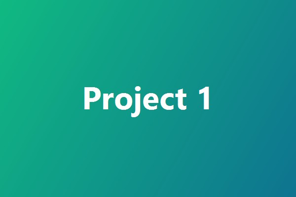

موقع شخصي بـ HTML
صفحات بسيطة فيها عنوان وقوائم وجدول ونموذج، وهو أول مشروع أبنيه من الصفر.

صفحات بسيطة فيها عنوان وقوائم وجدول ونموذج، وهو أول مشروع أبنيه من الصفر.

فكرة لمشروع أبني فيه تحليلًا لبيانات مبيعات بسيطة باستخدام Python وأعرض نتائجه في صفحة.
تطبيق يعرض معلومات المطارات ويتابع حالة الرحلات .